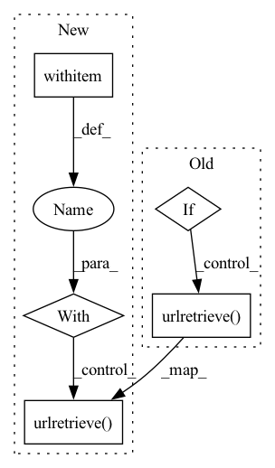

Pattern ID :3073

Before Change
if pretrained:
if pretrained_path == None:
if not os.path.exists("wav2vec_large.pt"):
// _ = wget.download("https://dl.fbaipublicfiles.com/fairseq/wav2vec/wav2vec_large.pt")
_ = urllib.request.urlretrieve("https://dl.fbaipublicfiles.com/fairseq/wav2vec/wav2vec_large.pt", "wav2vec_large.pt")
cp = torch.load("wav2vec_large.pt", map_location=self.device)
else: cp = torch.load(pretrained_path, lambda storage, loc: storage)
pretrained_dict = cp["model"]
model_dict = self.feature_extractor.state_dict()
After Change
// _ = wget.download("https://dl.fbaipublicfiles.com/fairseq/wav2vec/wav2vec_large.pt")
print("Downloading the pretrained weights from fairseq(https://dl.fbaipublicfiles.com/fairseq/wav2vec/wav2vec_large.pt) ...")
// _ = urllib.request.urlretrieve("https://dl.fbaipublicfiles.com/fairseq/wav2vec/wav2vec_large.pt", "wav2vec_large.pt", MyProgressBar())
with tqdm(unit="B", unit_scale=True, miniters=1, desc=filename) as t:
urllib.request.urlretrieve("https://dl.fbaipublicfiles.com/fairseq/wav2vec/wav2vec_large.pt", filename, reporthook=_reporthook(t))
cp = torch.load(filename, map_location=self.device)
else:
cp = torch.load(pretrained_path, map_location=self.device)
pretrained_dict = cp["model"]
In pattern: SUPERPATTERN
Frequency: 3
Non-data size: 5
Instances
Fragment ID: 11885120
Project Name: shangeth/wavencoder
Commit Name: 128e9940e5092ba12ee676b4e842d1f63f9ea9b7
Time: 2020-09-30
Author: shangethrajaa@gmail.com
File Name: build/lib/wavencoder/models/wav2vec.py
M Class Name: Wav2Vec
N Class Name: Wav2Vec
M Method Name: __init__(3)
N Method Name: __init__(3)
M Parent Class: nn.Module
N Parent Class: nn.Module
M File Name: build/lib/wavencoder/models/wav2vec.py
N File Name: build/lib/wavencoder/models/wav2vec.py
M Start Line: 179
M End Line: 182
N Start Line: 209
N End Line: 218
'>
Before Change
if pretrained:
if pretrained_path == None:
if not os.path.exists("wav2vec_large.pt"):
// _ = wget.download("https://dl.fbaipublicfiles.com/fairseq/wav2vec/wav2vec_large.pt")
_ = urllib.request.urlretrieve("https://dl.fbaipublicfiles.com/fairseq/wav2vec/wav2vec_large.pt", "wav2vec_large.pt")
cp = torch.load("wav2vec_large.pt", map_location=self.device)
else: cp = torch.load(pretrained_path, lambda storage, loc: storage)
pretrained_dict = cp["model"]
model_dict = self.feature_extractor.state_dict()
After Change
// _ = wget.download("https://dl.fbaipublicfiles.com/fairseq/wav2vec/wav2vec_large.pt")
print("Downloading the pretrained weights from fairseq(https://dl.fbaipublicfiles.com/fairseq/wav2vec/wav2vec_large.pt) ...")
// _ = urllib.request.urlretrieve("https://dl.fbaipublicfiles.com/fairseq/wav2vec/wav2vec_large.pt", "wav2vec_large.pt", MyProgressBar())
with tqdm(unit="B", unit_scale=True, miniters=1, desc=filename) as t:
urllib.request.urlretrieve("https://dl.fbaipublicfiles.com/fairseq/wav2vec/wav2vec_large.pt", filename, reporthook=_reporthook(t))
cp = torch.load(filename, map_location=self.device)
else:
cp = torch.load(pretrained_path, map_location=self.device)
pretrained_dict = cp["model"]
'>
Fragment ID: 11885117
Project Name: shangeth/wavencoder
Commit Name: 128e9940e5092ba12ee676b4e842d1f63f9ea9b7
Time: 2020-09-30
Author: shangethrajaa@gmail.com
File Name: wavencoder/models/wav2vec.py
M Class Name: Wav2Vec
N Class Name: Wav2Vec
M Method Name: __init__(3)
N Method Name: __init__(3)
M Parent Class: nn.Module
N Parent Class: nn.Module
M File Name: wavencoder/models/wav2vec.py
N File Name: wavencoder/models/wav2vec.py
M Start Line: 179
M End Line: 182
N Start Line: 207
N End Line: 215
'>
Before Change
return
if not self._check_exists(raw_file_path):
e = os.system("wget -t inf {} -O {}".format(data_url, raw_file_path))
if e==1:
urllib.request.urlretrieve(data_url,raw_file_path)
dataset = load_svmlight_file(raw_file_path)
features, labels = self._get_images_and_labels(dataset)
if self.name == "MSD":
features, labels = self.normalize(features, labels, self.name, root, self.split)
After Change
if self._check_exists(file_path):
return
if not self._check_exists(raw_file_path):
with TqdmUpTo(unit="B", unit_scale=True, unit_divisor=1024, miniters=1, desc=raw_file_path) as t:
urllib.request.urlretrieve(data_url,raw_file_path, reporthook=t.update_to, data=None)
dataset = load_svmlight_file(raw_file_path)
features, labels = self._get_images_and_labels(dataset)
if self.name == "MSD":
features, labels = self.normalize(features, labels, self.name, root, self.split)
'>
Fragment ID: 11885119
Project Name: mloptpsu/fedtorch
Commit Name: 34244559bb370af199fd7c3e9a16816a7ec6210d
Time: 2021-01-24
Author: mohamadmahdi.kamani@gmail.com
File Name: fedtorch/components/datasets/loader/libsvm_datasets.py
M Class Name: LibSVMDataset
N Class Name: LibSVMDataset
M Method Name: download(5)
N Method Name: download(5)
M Parent Class: object
N Parent Class: object
M File Name: fedtorch/components/datasets/loader/libsvm_datasets.py
N File Name: fedtorch/components/datasets/loader/libsvm_datasets.py
M Start Line: 118
M End Line: 121
N Start Line: 118
N End Line: 120